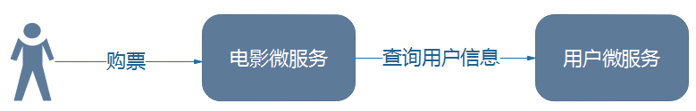

<!DOCTYPE HTML>
<html lang="zh-CN">
<head><meta name="generator" content="Hexo 3.8.0">
    <!--Setting-->
    <meta charset="UTF-8">
    <meta name="viewport" content="width=device-width, user-scalable=no, initial-scale=1.0, maximum-scale=1.0, minimum-scale=1.0">
    <meta http-equiv="X-UA-Compatible" content="IE=Edge,chrome=1">
    <meta http-equiv="Cache-Control" content="no-siteapp">
    <meta http-equiv="Cache-Control" content="no-transform">
    <meta http-equiv="pragma" content="no-cache">
    <meta http-equiv="Cache-Control" content="no-cache, must-revalidate">
    <meta http-equiv="expires" content="Mon Apr 06 2020 02:12:39 GMT+0800 (CST)">
    <meta name="renderer" content="webkit|ie-comp|ie-stand">
    <meta name="apple-mobile-web-app-capable" content="张万众的博客 - 关注Spring Cloud、Docker">
    <meta name="apple-mobile-web-app-status-bar-style" content="black">
    <meta name="format-detection" content="telephone=no,email=no,adress=no">
    <meta name="browsermode" content="application">
    <meta name="screen-orientation" content="portrait">
    <meta name="theme-version" content="1.2.3">
    <meta name="root" content="/">
    
    <!--SEO-->

    <meta name="keywords" content="Spring Cloud">


    <meta name="description" content="上一节说过，Spring Cloud是一个快速构建分布式应用的工具集。本节，我们就来编写一个简单的分布式应用，并探讨这个分布式应用有哪些问题。
服务消费者 &amp; 提供者本书使用服务提供者与服务消费者来描述微服务之间的调用关系。下表解释了服务提供者与服务消费者。
表-服务提供者与服务消费者...">


<meta name="robots" content="all">
<meta name="google" content="all">
<meta name="googlebot" content="all">
<meta name="verify" content="all">
    <!--Title-->


<title>跟我学Spring Cloud（Finchley版）-02-构建分布式应用 | 张万众的博客 - 关注Spring Cloud、Docker</title>


    <link rel="alternate" href="../../atom.html" title="张万众的博客 - 关注Spring Cloud、Docker" type="application/atom+xml">


    

    


<link rel="stylesheet" href="../../static/css/bootstrap.min-271a649e0635d6fa1b.css">
<link rel="stylesheet" href="../../static/css/font-awesome.min-ac2bebcf7fb5b26.css">
<link rel="stylesheet" href="../../static/css/style-6f3c140f6eee20e6591da00ec0.css">


    


    <script>
        var _hmt = _hmt || [];
        (function() {
            var hm = document.createElement("script");
            hm.src = "https://hm.baidu.com/hm.js?13766878cde148282622871dd245a973";
            var s = document.getElementsByTagName("script")[0];
            s.parentNode.insertBefore(hm, s);
        })();
    </script>


    

</head>

</html>
<!--[if lte IE 8]>
<style>
    html{ font-size: 1em }
</style>
<![endif]-->
<!--[if lte IE 9]>
<div style="ie">你使用的浏览器版本过低，为了你更好的阅读体验，请更新浏览器的版本或者使用其他现代浏览器，比如Chrome、Firefox、Safari等。</div>
<![endif]-->

<body>
    
    <nav class="main-navigation">
    <div class="container">
        <div class="row clearfix">
            <div class="col-md-12 column">
                <nav class="navbar navbar-default" style="background-color:#fff;border:0;margin-bottom:0" role="navigation">
                    <div class="navbar-header">
                        <button type="button" class="navbar-toggle" data-toggle="collapse" data-target="#navbar-collapse-1">
                            <span class="sr-only">切</span>
                            <span class="icon-bar"></span>
                            <span class="icon-bar"></span>
                            <span class="icon-bar"></span>
                        </button>
                        <a class="logo" href="../../index.html">
                            张万众的博客
                        </a>
                    </div>

                    <div class="collapse navbar-collapse" style="border:0;" id="navbar-collapse-1">
                        <ul class="nav navbar-nav">
                            
                                
                                    <li>
                                        <a href="../../about.html" target="_blank">
                                            <i class="fa fa-user"></i>
                                            关于我
                                        </a>
                                    </li>
                                
                            
                                
                                    <li>
                                        <a href="../../archives.html" target="_blank">
                                            <i class="fa fa-archive"></i>
                                            归档
                                        </a>
                                    </li>
                                
                            
                                
                                    <li class="dropdown">
                                        <a href="#" class="dropdown-toggle" data-toggle="dropdown" data-hover="dropdown">
                                            <i class="fa fa-fire"></i>
                                            系列课程
                                            <strong class="caret"></strong>
                                        </a>
                                        <ul class="dropdown-menu">
                                            
                                                <li>
                                                    <a href="../../docker/00-docker-lession-index.html" target="_blank">
                                                        <i class="fa "></i>
                                                        Docker系列教程
                                                    </a>
                                                </li>
                                            
                                                <li>
                                                    <a href="../spring-cloud-index.html" target="_blank">
                                                        <i class="fa "></i>
                                                        Spring Cloud系列教程
                                                    </a>
                                                </li>
                                            
                                                <li>
                                                    <a href="../../spring-boot/spring-boot-index.html" target="_blank">
                                                        <i class="fa "></i>
                                                        Spring Boot系列教程
                                                    </a>
                                                </li>
                                            
                                        </ul>
                                    </li>
                                
                            
                                
                                    <li class="dropdown">
                                        <a href="#" class="dropdown-toggle" data-toggle="dropdown" data-hover="dropdown">
                                            <i class="fa fa-book"></i>
                                            开源书
                                            <strong class="caret"></strong>
                                        </a>
                                        <ul class="dropdown-menu">
                                            
                                                <li>
                                                    <a href="../../books/rocketmq.html" target="_blank">
                                                        <i class="fa fa-rocket"></i>
                                                        RocketMQ开发者指南
                                                    </a>
                                                </li>
                                            
                                                <li>
                                                    <a href="../../books/skywalking.html" target="_blank">
                                                        <i class="fa fa-skyatlas"></i>
                                                        Skywalking 6.2.0中文文档
                                                    </a>
                                                </li>
                                            
                                        </ul>
                                    </li>
                                
                            
                                
                                    <li class="dropdown">
                                        <a href="#" class="dropdown-toggle" data-toggle="dropdown" data-hover="dropdown">
                                            <i class="fa fa-cog"></i>
                                            工具
                                            <strong class="caret"></strong>
                                        </a>
                                        <ul class="dropdown-menu">
                                            
                                                <li>
                                                    <a href="../../tools/markdown2.html" target="_blank">
                                                        <i class="fa "></i>
                                                        微信排版工具2.0
                                                    </a>
                                                </li>
                                            
                                        </ul>
                                    </li>
                                
                            
                        </ul>
                        
                            <form id="search-form" class="navbar-form navbar-right">
                                <div class="form-group input-group">
                                    <input type="text" id="local-search-input" class="form-control" placeholder="搜我...">
                                    <span class="input-group-btn">
                                        <a class="btn btn-default">
                                            <i class="fa fa-search"></i>
                                        </a>
                                    </span>
                                </div>
                                <div id="local-search-result" class="local-search-result-cls"></div>
                            </form>
                        
                    </div>
                </nav>
            </div>
        </div>
    </div>
</nav>

    <a href="javascript:;" target="_blank">
        
    </a>


    <section class="content-wrap">
        <div class="container">
            <div class="row">
                <main class="col-md-8 main-content m-post">
                    

<p id="process"></p>
<article class="post">
    <div class="post-head">
        <h1 id="跟我学Spring Cloud（Finchley版）-02-构建分布式应用">
            
                跟我学Spring Cloud（Finchley版）-02-构建分布式应用
            
        </h1>
        <div class="post-meta">
    
        <span class="categories-meta fa-wrap">
            <i class="fa fa-folder-open-o"></i>
            <a class="category-link" href="javascript:;">Spring Cloud</a>
        </span>
    

    
        <span class="fa-wrap">
            <i class="fa fa-tags"></i>
            <span class="tags-meta">
                
                    <a class="tag-link" href="javascript:;">Spring Cloud</a>
                
            </span>
        </span>
    

    
        
        <span class="fa-wrap">
            <i class="fa fa-clock-o"></i>
            <span class="date-meta">2018/12/28</span>
        </span>
        
            <span class="fa-wrap">
                <i class="fa fa-eye"></i>
                <span id="busuanzi_value_page_pv"></span>
            </span>
        
    
</div>
        
        
    </div>
    
    <div class="post-body post-content" id="post-content">
        
    <div class="toc-article">
        <strong>
            目录
        </strong>
        <div class="toc-content">
            <ol class="toc"><li class="toc-item toc-level-2"><a class="toc-link" href="#服务消费者-amp-提供者"><span class="toc-text">服务消费者 &amp; 提供者</span></a></li><li class="toc-item toc-level-2"><a class="toc-link" href="#Spring-Boot-Spring-Cloud应用开发套路"><span class="toc-text">Spring Boot/Spring Cloud应用开发套路</span></a></li><li class="toc-item toc-level-2"><a class="toc-link" href="#编写服务提供者【用户微服务】"><span class="toc-text">编写服务提供者【用户微服务】</span></a><ol class="toc-child"><li class="toc-item toc-level-3"><a class="toc-link" href="#测试"><span class="toc-text">测试</span></a></li></ol></li><li class="toc-item toc-level-2"><a class="toc-link" href="#编写服务消费者【电影微服务】"><span class="toc-text">编写服务消费者【电影微服务】</span></a><ol class="toc-child"><li class="toc-item toc-level-3"><a class="toc-link" href="#测试-1"><span class="toc-text">测试</span></a></li></ol></li><li class="toc-item toc-level-2"><a class="toc-link" href="#存在的问题"><span class="toc-text">存在的问题</span></a></li><li class="toc-item toc-level-2"><a class="toc-link" href="#配套代码"><span class="toc-text">配套代码</span></a></li></ol>
        </div>
    </div>


        <p>上一节说过，Spring Cloud是一个快速构建分布式应用的工具集。本节，我们就来编写一个简单的分布式应用，并探讨这个分布式应用有哪些问题。</p>
<h2 id="服务消费者-amp-提供者"><a href="#服务消费者-amp-提供者" class="headerlink" title="服务消费者 &amp; 提供者"></a>服务消费者 &amp; 提供者</h2><p>本书使用服务提供者与服务消费者来描述微服务之间的<strong>调用关系</strong>。下表解释了服务提供者与服务消费者。</p>
<p>表-服务提供者与服务消费者</p>
<table>
<thead>
<tr>
<th>名词</th>
<th>定义</th>
</tr>
</thead>
<tbody>
<tr>
<td>服务提供者</td>
<td>服务的被调用方（即：为其他服务提供服务的服务）</td>
</tr>
<tr>
<td>服务消费者</td>
<td>服务的调用方（即：依赖其他服务的服务）</td>
</tr>
</tbody>
</table>
<p>以电影售票系统为例。如图，用户向电影微服务发起了一个购票的请求。在进行购票的业务操作前，电影微服务需要调用用户微服务的接口，查询当前用户的余额是多少、是不是符合购票标准等。在这种场景下，用户微服务就是一个服务提供者，电影微服务则是一个服务消费者。</p>
<p></p>
<p>围绕该场景，先来编写一个用户微服务，然后编写一个电影微服务。</p>
<p><strong>TIPS</strong></p>
<p><strong>服务消费者和服务提供者描述的只是微服务之间的调用关系，一般成对出现</strong>。例如本文，用户微服务是是电影微服务的服务提供者，电影微服务是用户微服务的服务消费者。很多初学者和笔者交流时，会描述提供者如何如何……仿佛消费者和提供者是微服务的固有属性，这是不对的——例如A调用B，B调用C，那么B相对A就是提供者，B相对C就消费者。</p>
<h2 id="Spring-Boot-Spring-Cloud应用开发套路"><a href="#Spring-Boot-Spring-Cloud应用开发套路" class="headerlink" title="Spring Boot/Spring Cloud应用开发套路"></a>Spring Boot/Spring Cloud应用开发套路</h2><p>Spring Boot/Spring Cloud时代后，应用开发基本遵循<strong>三板斧</strong>：</p>
<ul>
<li>加依赖</li>
<li>加注解</li>
<li>写配置</li>
</ul>
<p>至于你的业务代码，该怎么写还怎么写。</p>
<p><strong>TIPS</strong></p>
<p><strong>对于懒人，可使用Spring Initilizr</strong>（IDEA、Spring Tool Suite等IDE上均有集成，也可在<a href="javascript:;" target="_blank" rel="noopener">http://start.spring.io</a> 使用网页版）创建应用，它会给你生成项目的依赖以及项目的骨架。后续，笔者会以番外的形式更新相关教程。</p>
<h2 id="编写服务提供者【用户微服务】"><a href="#编写服务提供者【用户微服务】" class="headerlink" title="编写服务提供者【用户微服务】"></a>编写服务提供者【用户微服务】</h2><ul>
<li><p>创建一个Maven项目，依赖如下：</p>
<figure class="highlight xml"><table><tr><td class="gutter"><pre><span class="line">1</span><br><span class="line">2</span><br><span class="line">3</span><br><span class="line">4</span><br><span class="line">5</span><br><span class="line">6</span><br><span class="line">7</span><br><span class="line">8</span><br><span class="line">9</span><br><span class="line">10</span><br><span class="line">11</span><br><span class="line">12</span><br><span class="line">13</span><br><span class="line">14</span><br><span class="line">15</span><br><span class="line">16</span><br><span class="line">17</span><br><span class="line">18</span><br><span class="line">19</span><br><span class="line">20</span><br><span class="line">21</span><br><span class="line">22</span><br><span class="line">23</span><br><span class="line">24</span><br><span class="line">25</span><br><span class="line">26</span><br><span class="line">27</span><br><span class="line">28</span><br><span class="line">29</span><br><span class="line">30</span><br><span class="line">31</span><br><span class="line">32</span><br><span class="line">33</span><br><span class="line">34</span><br><span class="line">35</span><br><span class="line">36</span><br><span class="line">37</span><br><span class="line">38</span><br><span class="line">39</span><br><span class="line">40</span><br><span class="line">41</span><br><span class="line">42</span><br><span class="line">43</span><br><span class="line">44</span><br><span class="line">45</span><br><span class="line">46</span><br><span class="line">47</span><br><span class="line">48</span><br><span class="line">49</span><br><span class="line">50</span><br><span class="line">51</span><br><span class="line">52</span><br><span class="line">53</span><br><span class="line">54</span><br><span class="line">55</span><br><span class="line">56</span><br><span class="line">57</span><br><span class="line">58</span><br><span class="line">59</span><br><span class="line">60</span><br><span class="line">61</span><br><span class="line">62</span><br><span class="line">63</span><br><span class="line">64</span><br><span class="line">65</span><br></pre></td><td class="code"><pre><span class="line"><span class="tag">&lt;<span class="name">project</span> <span class="attr">xmlns</span>=<span class="string">"http://maven.apache.org/POM/4.0.0"</span> <span class="attr">xmlns:xsi</span>=<span class="string">"http://www.w3.org/2001/XMLSchema-instance"</span></span></span><br><span class="line"><span class="tag">         <span class="attr">xsi:schemaLocation</span>=<span class="string">"http://maven.apache.org/POM/4.0.0 http://maven.apache.org/xsd/maven-4.0.0.xsd"</span>&gt;</span></span><br><span class="line">  <span class="tag">&lt;<span class="name">modelVersion</span>&gt;</span>4.0.0<span class="tag">&lt;/<span class="name">modelVersion</span>&gt;</span></span><br><span class="line">  <span class="tag">&lt;<span class="name">groupId</span>&gt;</span>com.itmuch.cloud<span class="tag">&lt;/<span class="name">groupId</span>&gt;</span></span><br><span class="line">  <span class="tag">&lt;<span class="name">artifactId</span>&gt;</span>microservice-simple-provider-user<span class="tag">&lt;/<span class="name">artifactId</span>&gt;</span></span><br><span class="line">  <span class="tag">&lt;<span class="name">version</span>&gt;</span>0.0.1-SNAPSHOT<span class="tag">&lt;/<span class="name">version</span>&gt;</span></span><br><span class="line">  <span class="tag">&lt;<span class="name">packaging</span>&gt;</span>jar<span class="tag">&lt;/<span class="name">packaging</span>&gt;</span></span><br><span class="line"></span><br><span class="line">  <span class="comment">&lt;!-- 引入spring boot的依赖 --&gt;</span></span><br><span class="line">  <span class="tag">&lt;<span class="name">parent</span>&gt;</span></span><br><span class="line">    <span class="tag">&lt;<span class="name">groupId</span>&gt;</span>org.springframework.boot<span class="tag">&lt;/<span class="name">groupId</span>&gt;</span></span><br><span class="line">    <span class="tag">&lt;<span class="name">artifactId</span>&gt;</span>spring-boot-starter-parent<span class="tag">&lt;/<span class="name">artifactId</span>&gt;</span></span><br><span class="line">    <span class="tag">&lt;<span class="name">version</span>&gt;</span>2.0.7.RELEASE<span class="tag">&lt;/<span class="name">version</span>&gt;</span></span><br><span class="line">  <span class="tag">&lt;/<span class="name">parent</span>&gt;</span></span><br><span class="line"></span><br><span class="line">  <span class="tag">&lt;<span class="name">properties</span>&gt;</span></span><br><span class="line">    <span class="tag">&lt;<span class="name">project.build.sourceEncoding</span>&gt;</span>UTF-8<span class="tag">&lt;/<span class="name">project.build.sourceEncoding</span>&gt;</span></span><br><span class="line">    <span class="tag">&lt;<span class="name">java.version</span>&gt;</span>1.8<span class="tag">&lt;/<span class="name">java.version</span>&gt;</span></span><br><span class="line">  <span class="tag">&lt;/<span class="name">properties</span>&gt;</span></span><br><span class="line"></span><br><span class="line">  <span class="tag">&lt;<span class="name">dependencies</span>&gt;</span></span><br><span class="line">    <span class="tag">&lt;<span class="name">dependency</span>&gt;</span></span><br><span class="line">      <span class="tag">&lt;<span class="name">groupId</span>&gt;</span>org.springframework.boot<span class="tag">&lt;/<span class="name">groupId</span>&gt;</span></span><br><span class="line">      <span class="tag">&lt;<span class="name">artifactId</span>&gt;</span>spring-boot-starter-web<span class="tag">&lt;/<span class="name">artifactId</span>&gt;</span></span><br><span class="line">    <span class="tag">&lt;/<span class="name">dependency</span>&gt;</span></span><br><span class="line">    <span class="tag">&lt;<span class="name">dependency</span>&gt;</span></span><br><span class="line">      <span class="tag">&lt;<span class="name">groupId</span>&gt;</span>org.springframework.boot<span class="tag">&lt;/<span class="name">groupId</span>&gt;</span></span><br><span class="line">      <span class="tag">&lt;<span class="name">artifactId</span>&gt;</span>spring-boot-starter-data-jpa<span class="tag">&lt;/<span class="name">artifactId</span>&gt;</span></span><br><span class="line">    <span class="tag">&lt;/<span class="name">dependency</span>&gt;</span></span><br><span class="line">    <span class="comment">&lt;!-- 引入H2数据库，一种内嵌的数据库，语法类似MySQL --&gt;</span></span><br><span class="line">    <span class="tag">&lt;<span class="name">dependency</span>&gt;</span></span><br><span class="line">      <span class="tag">&lt;<span class="name">groupId</span>&gt;</span>com.h2database<span class="tag">&lt;/<span class="name">groupId</span>&gt;</span></span><br><span class="line">      <span class="tag">&lt;<span class="name">artifactId</span>&gt;</span>h2<span class="tag">&lt;/<span class="name">artifactId</span>&gt;</span></span><br><span class="line">    <span class="tag">&lt;/<span class="name">dependency</span>&gt;</span></span><br><span class="line">    <span class="comment">&lt;!-- 引入Lombok --&gt;</span></span><br><span class="line">    <span class="tag">&lt;<span class="name">dependency</span>&gt;</span></span><br><span class="line">      <span class="tag">&lt;<span class="name">groupId</span>&gt;</span>org.projectlombok<span class="tag">&lt;/<span class="name">groupId</span>&gt;</span></span><br><span class="line">      <span class="tag">&lt;<span class="name">artifactId</span>&gt;</span>lombok<span class="tag">&lt;/<span class="name">artifactId</span>&gt;</span></span><br><span class="line">      <span class="tag">&lt;<span class="name">optional</span>&gt;</span>true<span class="tag">&lt;/<span class="name">optional</span>&gt;</span></span><br><span class="line">    <span class="tag">&lt;/<span class="name">dependency</span>&gt;</span></span><br><span class="line">  <span class="tag">&lt;/<span class="name">dependencies</span>&gt;</span></span><br><span class="line"></span><br><span class="line">  <span class="comment">&lt;!-- 引入spring cloud的依赖，不能少，主要用来管理Spring Cloud生态各组件的版本 --&gt;</span></span><br><span class="line">  <span class="tag">&lt;<span class="name">dependencyManagement</span>&gt;</span></span><br><span class="line">    <span class="tag">&lt;<span class="name">dependencies</span>&gt;</span></span><br><span class="line">      <span class="tag">&lt;<span class="name">dependency</span>&gt;</span></span><br><span class="line">        <span class="tag">&lt;<span class="name">groupId</span>&gt;</span>org.springframework.cloud<span class="tag">&lt;/<span class="name">groupId</span>&gt;</span></span><br><span class="line">        <span class="tag">&lt;<span class="name">artifactId</span>&gt;</span>spring-cloud-dependencies<span class="tag">&lt;/<span class="name">artifactId</span>&gt;</span></span><br><span class="line">        <span class="tag">&lt;<span class="name">version</span>&gt;</span>Finchley.SR2<span class="tag">&lt;/<span class="name">version</span>&gt;</span></span><br><span class="line">        <span class="tag">&lt;<span class="name">type</span>&gt;</span>pom<span class="tag">&lt;/<span class="name">type</span>&gt;</span></span><br><span class="line">        <span class="tag">&lt;<span class="name">scope</span>&gt;</span>import<span class="tag">&lt;/<span class="name">scope</span>&gt;</span></span><br><span class="line">      <span class="tag">&lt;/<span class="name">dependency</span>&gt;</span></span><br><span class="line">    <span class="tag">&lt;/<span class="name">dependencies</span>&gt;</span></span><br><span class="line">  <span class="tag">&lt;/<span class="name">dependencyManagement</span>&gt;</span></span><br><span class="line"></span><br><span class="line">  <span class="comment">&lt;!-- 添加spring-boot的maven插件，不能少，打jar包时得用 --&gt;</span></span><br><span class="line">  <span class="tag">&lt;<span class="name">build</span>&gt;</span></span><br><span class="line">    <span class="tag">&lt;<span class="name">plugins</span>&gt;</span></span><br><span class="line">      <span class="tag">&lt;<span class="name">plugin</span>&gt;</span></span><br><span class="line">        <span class="tag">&lt;<span class="name">groupId</span>&gt;</span>org.springframework.boot<span class="tag">&lt;/<span class="name">groupId</span>&gt;</span></span><br><span class="line">        <span class="tag">&lt;<span class="name">artifactId</span>&gt;</span>spring-boot-maven-plugin<span class="tag">&lt;/<span class="name">artifactId</span>&gt;</span></span><br><span class="line">      <span class="tag">&lt;/<span class="name">plugin</span>&gt;</span></span><br><span class="line">    <span class="tag">&lt;/<span class="name">plugins</span>&gt;</span></span><br><span class="line">  <span class="tag">&lt;/<span class="name">build</span>&gt;</span></span><br><span class="line"><span class="tag">&lt;/<span class="name">project</span>&gt;</span></span><br></pre></td></tr></table></figure>
<p>其中，<code>spring-boot-starter-web</code> 提供了Spring MVC的支持；<code>spring-boot-starter-data-jpa</code> 提供了Spring Data JPA的支持；<code>h2</code> 是一种内嵌的数据库，语法和MySQL类似（笔者实在没有动力为了简单的演示再写一大堆内容去演示怎么安装MySQL数据库）；<code>lombok</code> 则是一款开发利器，可以帮助你简化掉N多冗余代码。</p>
<p><strong>WARNING</strong></p>
<ul>
<li><strong>Lombok之前，必须为你的IDE安装Lombok插件！</strong>可参考：<a href="javascript:;" target="_blank" rel="noopener">http://www.cnblogs.com/shindo/p/7550790.html</a></li>
</ul>
<p><strong>TIPS</strong></p>
<ul>
<li>Lombok快速上手：<a href="javascript:;" target="_blank" rel="noopener">https://blog.csdn.net/motui/article/details/79012846</a></li>
<li>Lombok官方网站：<a href="javascript:;" target="_blank" rel="noopener">https://projectlombok.org/</a></li>
</ul>
</li>
<li><p>创建实体类：</p>
<figure class="highlight java"><table><tr><td class="gutter"><pre><span class="line">1</span><br><span class="line">2</span><br><span class="line">3</span><br><span class="line">4</span><br><span class="line">5</span><br><span class="line">6</span><br><span class="line">7</span><br><span class="line">8</span><br><span class="line">9</span><br><span class="line">10</span><br><span class="line">11</span><br><span class="line">12</span><br><span class="line">13</span><br><span class="line">14</span><br><span class="line">15</span><br><span class="line">16</span><br><span class="line">17</span><br></pre></td><td class="code"><pre><span class="line"><span class="meta">@Entity</span></span><br><span class="line"><span class="meta">@Data</span></span><br><span class="line"><span class="meta">@NoArgsConstructor</span></span><br><span class="line"><span class="meta">@AllArgsConstructor</span></span><br><span class="line"><span class="keyword">public</span> <span class="class"><span class="keyword">class</span> <span class="title">User</span> </span>&#123;</span><br><span class="line">  <span class="meta">@Id</span></span><br><span class="line">  <span class="meta">@GeneratedValue</span>(strategy = GenerationType.AUTO)</span><br><span class="line">  <span class="keyword">private</span> Long id;</span><br><span class="line">  <span class="meta">@Column</span></span><br><span class="line">  <span class="keyword">private</span> String username;</span><br><span class="line">  <span class="meta">@Column</span></span><br><span class="line">  <span class="keyword">private</span> String name;</span><br><span class="line">  <span class="meta">@Column</span></span><br><span class="line">  <span class="keyword">private</span> Integer age;</span><br><span class="line">  <span class="meta">@Column</span></span><br><span class="line">  <span class="keyword">private</span> BigDecimal balance;</span><br><span class="line">&#125;</span><br></pre></td></tr></table></figure>
</li>
<li><p>创建DAO：</p>
<figure class="highlight java"><table><tr><td class="gutter"><pre><span class="line">1</span><br><span class="line">2</span><br><span class="line">3</span><br></pre></td><td class="code"><pre><span class="line"><span class="meta">@Repository</span></span><br><span class="line"><span class="keyword">public</span> <span class="class"><span class="keyword">interface</span> <span class="title">UserRepository</span> <span class="keyword">extends</span> <span class="title">JpaRepository</span>&lt;<span class="title">User</span>, <span class="title">Long</span>&gt; </span>&#123;</span><br><span class="line">&#125;</span><br></pre></td></tr></table></figure>
</li>
<li><p>创建Controller：</p>
<figure class="highlight java"><table><tr><td class="gutter"><pre><span class="line">1</span><br><span class="line">2</span><br><span class="line">3</span><br><span class="line">4</span><br><span class="line">5</span><br><span class="line">6</span><br><span class="line">7</span><br><span class="line">8</span><br><span class="line">9</span><br><span class="line">10</span><br><span class="line">11</span><br></pre></td><td class="code"><pre><span class="line"><span class="meta">@RequestMapping</span>(<span class="string">"/users"</span>)</span><br><span class="line"><span class="meta">@RestController</span></span><br><span class="line"><span class="keyword">public</span> <span class="class"><span class="keyword">class</span> <span class="title">UserController</span> </span>&#123;</span><br><span class="line">  <span class="meta">@Autowired</span></span><br><span class="line">  <span class="keyword">private</span> UserRepository userRepository;</span><br><span class="line"></span><br><span class="line">  <span class="meta">@GetMapping</span>(<span class="string">"/&#123;id&#125;"</span>)</span><br><span class="line">  <span class="function"><span class="keyword">public</span> Optional&lt;User&gt; <span class="title">findById</span><span class="params">(@PathVariable Long id)</span> </span>&#123;</span><br><span class="line">    <span class="keyword">return</span> <span class="keyword">this</span>.userRepository.findById(id);</span><br><span class="line">  &#125;</span><br><span class="line">&#125;</span><br></pre></td></tr></table></figure>
<p>其中， <code>@GetMapping</code>，是Spring 4.3提供的新注解。它是一个组合注解，等价于<code>@RequestMapping(method = RequestMethod.GET)</code>，用于简化开发。同理还有<code>@PostMapping</code>、<code>@PutMapping</code>、<code>@DeleteMapping</code>、<code>@PatchMapping</code>等。</p>
</li>
<li><p>编写启动类：</p>
<figure class="highlight java"><table><tr><td class="gutter"><pre><span class="line">1</span><br><span class="line">2</span><br><span class="line">3</span><br><span class="line">4</span><br><span class="line">5</span><br><span class="line">6</span><br><span class="line">7</span><br><span class="line">8</span><br><span class="line">9</span><br><span class="line">10</span><br><span class="line">11</span><br><span class="line">12</span><br><span class="line">13</span><br><span class="line">14</span><br><span class="line">15</span><br><span class="line">16</span><br><span class="line">17</span><br><span class="line">18</span><br><span class="line">19</span><br><span class="line">20</span><br><span class="line">21</span><br><span class="line">22</span><br><span class="line">23</span><br><span class="line">24</span><br><span class="line">25</span><br><span class="line">26</span><br><span class="line">27</span><br></pre></td><td class="code"><pre><span class="line"><span class="meta">@SpringBootApplication</span></span><br><span class="line"><span class="keyword">public</span> <span class="class"><span class="keyword">class</span> <span class="title">ProviderUserApplication</span> </span>&#123;</span><br><span class="line">  <span class="function"><span class="keyword">public</span> <span class="keyword">static</span> <span class="keyword">void</span> <span class="title">main</span><span class="params">(String[] args)</span> </span>&#123;</span><br><span class="line">    SpringApplication.run(ProviderUserApplication.class, args);</span><br><span class="line">  &#125;</span><br><span class="line"></span><br><span class="line">  <span class="comment">/**</span></span><br><span class="line"><span class="comment">   * 初始化用户信息</span></span><br><span class="line"><span class="comment">   * 注：Spring Boot2不能像1.x一样，用spring.datasource.schema/data指定初始化SQL脚本，否则与actuator不能共存</span></span><br><span class="line"><span class="comment">   * 原因详见：</span></span><br><span class="line"><span class="comment">   * https://github.com/spring-projects/spring-boot/issues/13042</span></span><br><span class="line"><span class="comment">   * https://github.com/spring-projects/spring-boot/issues/13539</span></span><br><span class="line"><span class="comment">   *</span></span><br><span class="line"><span class="comment">   * <span class="doctag">@param</span> repository repo</span></span><br><span class="line"><span class="comment">   * <span class="doctag">@return</span> runner</span></span><br><span class="line"><span class="comment">   */</span></span><br><span class="line">  <span class="meta">@Bean</span></span><br><span class="line">  <span class="function">ApplicationRunner <span class="title">init</span><span class="params">(UserRepository repository)</span> </span>&#123;</span><br><span class="line">    <span class="keyword">return</span> args -&gt; &#123;</span><br><span class="line">      User user1 = <span class="keyword">new</span> User(<span class="number">1L</span>, <span class="string">"account1"</span>, <span class="string">"张三"</span>, <span class="number">20</span>, <span class="keyword">new</span> BigDecimal(<span class="number">100.00</span>));</span><br><span class="line">      User user2 = <span class="keyword">new</span> User(<span class="number">2L</span>, <span class="string">"account2"</span>, <span class="string">"李四"</span>, <span class="number">28</span>, <span class="keyword">new</span> BigDecimal(<span class="number">180.00</span>));</span><br><span class="line">      User user3 = <span class="keyword">new</span> User(<span class="number">3L</span>, <span class="string">"account3"</span>, <span class="string">"王五"</span>, <span class="number">32</span>, <span class="keyword">new</span> BigDecimal(<span class="number">280.00</span>));</span><br><span class="line">      Stream.of(user1, user2, user3)</span><br><span class="line">        .forEach(repository::save);</span><br><span class="line">    &#125;;</span><br><span class="line">  &#125;</span><br><span class="line">&#125;</span><br></pre></td></tr></table></figure>
<p><code>@SpringBootApplication</code>是一个组合注解，它整合了<code>@Configuration</code>、<code>@EnableAutoConfiguration</code>和<code>@ComponentScan</code>注解，并开启了Spring Boot程序的组件扫描和自动配置功能。在开发Spring Boot程序的过程中，常常会组合使用<code>@Configuration</code>、<code>@EnableAutoConfiguration</code>和<code>@ComponentScan</code>等注解，所以Spring Boot提供了<code>@SpringBootApplication</code>，来简化开发。</p>
<p>在启动时，我们使用了<code>ApplicationRunner init(UserRepository repository)</code> 初始化了三条数据，分别是张三、李四、王五。<code>@Bean</code> 则是一个方法注解，作用是实例化一个Bean并使用该方法的名称命名。类似于XML配置方式的<code>&lt;bean id=&quot;init&quot; class=&quot;...ApplicationRunner&quot;/&gt;</code> 。</p>
</li>
<li><p>编写配置文件<code>application.yml</code> ：</p>
<figure class="highlight yaml"><table><tr><td class="gutter"><pre><span class="line">1</span><br><span class="line">2</span><br><span class="line">3</span><br><span class="line">4</span><br><span class="line">5</span><br><span class="line">6</span><br><span class="line">7</span><br><span class="line">8</span><br><span class="line">9</span><br><span class="line">10</span><br><span class="line">11</span><br><span class="line">12</span><br><span class="line">13</span><br><span class="line">14</span><br></pre></td><td class="code"><pre><span class="line"><span class="attr">server:</span></span><br><span class="line">  <span class="comment"># 指定Tomcat端口</span></span><br><span class="line"><span class="attr">  port:</span> <span class="number">8000</span></span><br><span class="line"><span class="attr">spring:</span></span><br><span class="line"><span class="attr">  jpa:</span></span><br><span class="line">    <span class="comment"># 让hibernate打印执行的SQL</span></span><br><span class="line"><span class="attr">    show-sql:</span> <span class="literal">true</span></span><br><span class="line"><span class="attr">logging:</span></span><br><span class="line"><span class="attr">  level:</span></span><br><span class="line"><span class="attr">    root:</span> <span class="string">INFO</span></span><br><span class="line">    <span class="comment"># 配置日志级别，让hibernate打印出执行的SQL参数</span></span><br><span class="line">    <span class="string">org.hibernate:</span> <span class="string">INFO</span></span><br><span class="line">    <span class="string">org.hibernate.type.descriptor.sql.BasicBinder:</span> <span class="string">TRACE</span></span><br><span class="line">    <span class="string">org.hibernate.type.descriptor.sql.BasicExtractor:</span> <span class="string">TRACE</span></span><br></pre></td></tr></table></figure>
<p>传统Web应用开发中，常使用properties格式文件作为配置文件。Spring Boot以及Spring Cloud支持使用properties或者yml格式的文件作为配置文件。</p>
<p>yml文件格式是YAML（Yet Another Markup Language）编写的文件格式，YAML和properties格式的文件可互相转换，例如本节中的application.yml，就等价于如下的properties文件：</p>
<figure class="highlight plain"><table><tr><td class="gutter"><pre><span class="line">1</span><br><span class="line">2</span><br><span class="line">3</span><br><span class="line">4</span><br><span class="line">5</span><br><span class="line">6</span><br></pre></td><td class="code"><pre><span class="line">server.port=8000</span><br><span class="line">spring.jpa.show-sql=true</span><br><span class="line">logging.level.root=INFO</span><br><span class="line">logging.level.org.hibernate=INFO</span><br><span class="line">logging.level.org.hibernate.type.descriptor.sql.BasicBinder=TRACE</span><br><span class="line">logging.level.org.hibernate.type.descriptor.sql.BasicExtractor=TRACE</span><br></pre></td></tr></table></figure>
<p>从中不难看出，YAML比properties结构清晰；可读性、可维护性也更强，并且语法非常简洁。因此，本书使用YAML格式作为配置文件。但，<strong>yml有严格的缩进，并且key与value之间使用<code>:</code> 分隔，冒号后的空格不能少，请大家注意</strong>。</p>
</li>
</ul>
<h3 id="测试"><a href="#测试" class="headerlink" title="测试"></a>测试</h3><p>访问<code>http://localhost:8000/users/1</code> ，可获得结果：</p>
<figure class="highlight json"><table><tr><td class="gutter"><pre><span class="line">1</span><br></pre></td><td class="code"><pre><span class="line">&#123;<span class="attr">"id"</span>:<span class="number">1</span>,<span class="attr">"username"</span>:<span class="string">"account1"</span>,<span class="attr">"name"</span>:<span class="string">"张三"</span>,<span class="attr">"age"</span>:<span class="number">20</span>,<span class="attr">"balance"</span>:<span class="number">100.00</span>&#125;</span><br></pre></td></tr></table></figure>
<h2 id="编写服务消费者【电影微服务】"><a href="#编写服务消费者【电影微服务】" class="headerlink" title="编写服务消费者【电影微服务】"></a>编写服务消费者【电影微服务】</h2><p>我们已经编写了一个服务提供者（用户微服务），本节来编写一个服务消费者（电影微服务）。该服务非常简单，它使用RestTemplate调用用户微服务的API，从而查询指定id的用户信息。</p>
<ul>
<li><p>创建一个Maven项目，ArtifactId是<code>microservice-simple-consumer-movie</code> 。</p>
</li>
<li><p>加依赖：</p>
<figure class="highlight xml"><table><tr><td class="gutter"><pre><span class="line">1</span><br><span class="line">2</span><br><span class="line">3</span><br><span class="line">4</span><br></pre></td><td class="code"><pre><span class="line"><span class="tag">&lt;<span class="name">dependency</span>&gt;</span></span><br><span class="line">  <span class="tag">&lt;<span class="name">groupId</span>&gt;</span>org.springframework.boot<span class="tag">&lt;/<span class="name">groupId</span>&gt;</span></span><br><span class="line">  <span class="tag">&lt;<span class="name">artifactId</span>&gt;</span>spring-boot-starter-web<span class="tag">&lt;/<span class="name">artifactId</span>&gt;</span></span><br><span class="line"><span class="tag">&lt;/<span class="name">dependency</span>&gt;</span></span><br></pre></td></tr></table></figure>
</li>
<li><p>创建实体类：</p>
<figure class="highlight java"><table><tr><td class="gutter"><pre><span class="line">1</span><br><span class="line">2</span><br><span class="line">3</span><br><span class="line">4</span><br><span class="line">5</span><br><span class="line">6</span><br><span class="line">7</span><br><span class="line">8</span><br><span class="line">9</span><br><span class="line">10</span><br></pre></td><td class="code"><pre><span class="line"><span class="meta">@Data</span></span><br><span class="line"><span class="meta">@AllArgsConstructor</span></span><br><span class="line"><span class="meta">@NoArgsConstructor</span></span><br><span class="line"><span class="keyword">public</span> <span class="class"><span class="keyword">class</span> <span class="title">User</span> </span>&#123;</span><br><span class="line">  <span class="keyword">private</span> Long id;</span><br><span class="line">  <span class="keyword">private</span> String username;</span><br><span class="line">  <span class="keyword">private</span> String name;</span><br><span class="line">  <span class="keyword">private</span> Integer age;</span><br><span class="line">  <span class="keyword">private</span> BigDecimal balance;</span><br><span class="line">&#125;</span><br></pre></td></tr></table></figure>
</li>
<li><p>创建启动类：</p>
<figure class="highlight java"><table><tr><td class="gutter"><pre><span class="line">1</span><br><span class="line">2</span><br><span class="line">3</span><br><span class="line">4</span><br><span class="line">5</span><br><span class="line">6</span><br><span class="line">7</span><br><span class="line">8</span><br><span class="line">9</span><br><span class="line">10</span><br><span class="line">11</span><br></pre></td><td class="code"><pre><span class="line"><span class="meta">@SpringBootApplication</span></span><br><span class="line"><span class="keyword">public</span> <span class="class"><span class="keyword">class</span> <span class="title">ConsumerMovieApplication</span> </span>&#123;</span><br><span class="line">  <span class="meta">@Bean</span></span><br><span class="line">  <span class="function"><span class="keyword">public</span> RestTemplate <span class="title">restTemplate</span><span class="params">()</span> </span>&#123;</span><br><span class="line">    <span class="keyword">return</span> <span class="keyword">new</span> RestTemplate();</span><br><span class="line">  &#125;</span><br><span class="line"></span><br><span class="line">  <span class="function"><span class="keyword">public</span> <span class="keyword">static</span> <span class="keyword">void</span> <span class="title">main</span><span class="params">(String[] args)</span> </span>&#123;</span><br><span class="line">    SpringApplication.run(ConsumerMovieApplication.class, args);</span><br><span class="line">  &#125;</span><br><span class="line">&#125;</span><br></pre></td></tr></table></figure>
</li>
<li><p>创建Controller：</p>
<figure class="highlight java"><table><tr><td class="gutter"><pre><span class="line">1</span><br><span class="line">2</span><br><span class="line">3</span><br><span class="line">4</span><br><span class="line">5</span><br><span class="line">6</span><br><span class="line">7</span><br><span class="line">8</span><br><span class="line">9</span><br><span class="line">10</span><br><span class="line">11</span><br><span class="line">12</span><br><span class="line">13</span><br><span class="line">14</span><br></pre></td><td class="code"><pre><span class="line"><span class="meta">@RequestMapping</span>(<span class="string">"/movies"</span>)</span><br><span class="line"><span class="meta">@RestController</span></span><br><span class="line"><span class="keyword">public</span> <span class="class"><span class="keyword">class</span> <span class="title">MovieController</span> </span>&#123;</span><br><span class="line">  <span class="meta">@Autowired</span></span><br><span class="line">  <span class="keyword">private</span> RestTemplate restTemplate;</span><br><span class="line"></span><br><span class="line">  <span class="meta">@GetMapping</span>(<span class="string">"/users/&#123;id&#125;"</span>)</span><br><span class="line">  <span class="function"><span class="keyword">public</span> User <span class="title">findById</span><span class="params">(@PathVariable Long id)</span> </span>&#123;</span><br><span class="line">    <span class="comment">// 这里用到了RestTemplate的占位符能力</span></span><br><span class="line">    User user = <span class="keyword">this</span>.restTemplate.getForObject(<span class="string">"http://localhost:8000/users/&#123;id&#125;"</span>, User.class, id);</span><br><span class="line">    <span class="comment">// ...电影微服务的业务...</span></span><br><span class="line">    <span class="keyword">return</span> user;</span><br><span class="line">  &#125;</span><br><span class="line">&#125;</span><br></pre></td></tr></table></figure>
<p>由代码可知，Controller使用RestTemplate调用用户微服务的RESTful API。</p>
</li>
<li><p>编写配置文件<code>application.yml</code> ：</p>
<figure class="highlight yaml"><table><tr><td class="gutter"><pre><span class="line">1</span><br><span class="line">2</span><br></pre></td><td class="code"><pre><span class="line"><span class="attr">server:</span></span><br><span class="line"><span class="attr">  port:</span> <span class="number">8010</span></span><br></pre></td></tr></table></figure>
</li>
</ul>
<p><strong>拓展阅读</strong></p>
<p>本文使用RestTemplate实现了基于HTTP的远程调用，事实上，Spring 5开始，WebFlux提供了Reactive的Web Client：<code>WebClinet</code> ，<strong>使用方式和RestTemplate基本类似，但性能更强，吞吐更好</strong>。有兴趣的可前往<a href="javascript:;" target="_blank" rel="noopener">https://docs.spring.io/spring/docs/5.1.3.RELEASE/spring-framework-reference/web-reactive.html#webflux-client-builder</a> 了解。在这里，笔者对WebClient做了一些简单的封装，也可关注：<a href="javascript:;" target="_blank" rel="noopener">https://github.com/itmuch/thor-test/blob/master/src/main/java/com/itmuch/thor/httpclient/WebClientUtil.java</a></p>
<h3 id="测试-1"><a href="#测试-1" class="headerlink" title="测试"></a>测试</h3><p>访问：<code>http://localhost:8010/movies/users/1</code> ，结果如下：</p>
<figure class="highlight json"><table><tr><td class="gutter"><pre><span class="line">1</span><br></pre></td><td class="code"><pre><span class="line">&#123;<span class="attr">"id"</span>:<span class="number">1</span>,<span class="attr">"username"</span>:<span class="string">"account1"</span>,<span class="attr">"name"</span>:<span class="string">"张三"</span>,<span class="attr">"age"</span>:<span class="number">20</span>,<span class="attr">"balance"</span>:<span class="number">100.00</span>&#125;</span><br></pre></td></tr></table></figure>
<h2 id="存在的问题"><a href="#存在的问题" class="headerlink" title="存在的问题"></a>存在的问题</h2><p>至此，我们已经实现了这个最简单的分布式应用，应用之间通过HTTP通信。代码非常简单，但这些简单的代码里，存在着若干问题：</p>
<ul>
<li><p>应用没有监控，没有画板，一切指标都没有。在这个Growth Hack逐渐成为主流的时代，不弄个Dashboard把系统压力、QPS、CPU、内存、日活啥的可视化，你好意思出来混吗……</p>
</li>
<li><p>地址硬编码问题——电影微服务中将用户微服务的地址写死，如果用户微服务地址发生变化，难道要重新上线电影微服务吗？</p>
<blockquote>
<p>你可能会质疑：用户微服务地址为什么会变，让它保持不变就行了啊，这不是问题。这里举两个例子：</p>
<p>例1：如果你用Docker，那么地址几乎每次启动都会变……</p>
<p>例2：你之前用的是TXYun，后来你想把用户微服务迁移到Aliyun。这个时候IP就会发生变化。我相信你不会乐意找到哪些服务调用了用户微服务的接口，然后所有调用用户微服务的服务统一修改地址……</p>
</blockquote>
</li>
<li><p>负载均衡如何考虑？难道得在电影微服务和用户微服务之间加个NGINX做负载均衡吗？听起来是可行的，但如果有10000+服务（这并不夸张，我司的微服务数目是这个数字乘以N，N &gt;= m，哈哈哈）那这个NGINX的配置得有多复杂……</p>
</li>
<li><p>服务之间没有容错机制，相信对技术有激情的你已经不止一次听过容错、降级、fallback、回退之类的词汇。</p>
</li>
<li><p>如果应用发生故障，你怎么迅速找到问题所在？</p>
</li>
<li><p>用户认证和授权呢？被狗吃了吗？</p>
</li>
</ul>
<p>如上词汇，你可能看得懂，你也可能看不懂。<strong>没有关系，请继续阅读，笔者将会用通俗的语言去描述，在你看完本系列后，你会知道，原来那些所谓的高大上的理论、术语、技术，原来也就是这么回事儿。</strong></p>
<h2 id="配套代码"><a href="#配套代码" class="headerlink" title="配套代码"></a>配套代码</h2><ul>
<li><p>GitHub：</p>
<ul>
<li><a href="javascript:;" target="_blank" rel="noopener">https://github.com/eacdy/spring-cloud-study/tree/master/2018-Finchley/microservice-simple-provider-user</a></li>
<li><a href="javascript:;" target="_blank" rel="noopener">https://github.com/eacdy/spring-cloud-study/tree/master/2018-Finchley/microservice-simple-consumer-movie</a></li>
</ul>
</li>
<li><p>Gitee：</p>
<ul>
<li><a href="javascript:;" target="_blank" rel="noopener">https://gitee.com/itmuch/spring-cloud-study/tree/master/2018-Finchley/microservice-simple-provider-user</a></li>
<li><a href="javascript:;" target="_blank" rel="noopener">https://gitee.com/itmuch/spring-cloud-study/tree/master/2018-Finchley/microservice-simple-consumer-movie</a></li>
</ul>
</li>
</ul>

        <h2>相关文章</h2><ul><li><a href="../finchley-5/index.html">跟我学Spring Cloud（Finchley版）-05-服务注册与服务发现-Eureka入门</a></li><li><a href="../../spring-cloud-feign-ribbon-first-request-fail/index.html">Spring Cloud中，如何解决Feign/Ribbon第一次请求失败的问题？</a></li><li><a href="../../spring-cloud-sum-eureka/index.html">Spring Cloud中，Eureka常见问题总结</a></li><li><a href="../../advertisment/my-spring-book/index.html">《Spring Cloud与Docker微服务实战》实体书目录</a></li><li><a href="../../advertisment/my-spring-book-code/index.html">《Spring Cloud与Docker微服务架构实战》配套代码</a></li></ul>
    </div>
    
    <div class="post-footer">
        <div class="col-sm-10">
            <div>
                <b>本文链接</b>：<a href="" target="_blank">跟我学Spring Cloud（Finchley版）-02-构建分布式应用</a>
            </div>
            <div>
                
                    转载声明：本博客由张万众创作，采用 <a href="javascript:;" target="_blank"> CC BY 3.0 CN </a> 许可协议。可自由转载、引用，但需署名作者且注明文章出处。如转载至微信公众号，请在文末添加作者公众号二维码。
                
            </div>
            <div>
                
            </div>
        </div>
        <div class="col-sm-2">
            
        </div>
    </div>
</article>

<div class="article-nav prev-next-wrap clearfix">
    
        <a target="_blank" href="../finchley-3/index.html" class="pre-post btn btn-default" title="跟我学Spring Cloud（Finchley版）-03-监控：强大的Spring Boot Actuator">
            <i class="fa fa-angle-left fa-fw"></i><span class="hidden-lg">上一篇</span>
            <span class="hidden-xs">跟我学Spring Cloud（Finchley版）-03-监控：强大的Spring Boot Actuator</span>
        </a>
    
    
        <a target="_blank" href="../finchley-1/index.html" class="next-post btn btn-default" title="跟我学Spring Cloud（Finchley版）-01-开篇">
            <span class="hidden-lg">下一篇</span>
            <span class="hidden-xs">跟我学Spring Cloud（Finchley版）-01-开篇</span><i class="fa fa-angle-right fa-fw"></i>
        </a>
    
</div>


    <div id="comments">
        
   <p>评论系统未开启，无法评论！</p>

    </div>


                </main>
                
    <aside class="col-md-4 sidebar">
        
        <div class="widget about-me">
    <div class="row">
        <div class="col-md-5">
            
        </div>
        <div class="col-md-7">
            <a class="series-a" href="javascript:void(0)">公众号</a>
            <ul>
                <li>• 技术干货推送</li>
                <li>• 免费资料领取</li>
                <li><b>• 扫码领取更多惊喜</b></li>
            </ul>
        </div>
    </div>
    
        <div class="row">
            <div class="col-md-5">
                
            </div>
            <div class="col-md-7">
                <a class="series-a" href="javascript:void(0)">小程序</a>
                <ul>
                    <li>• 原创笔记</li>
                    <li>• 独家心法</li>
                    <li><b>• 扫码领取</b></li>
                </ul>
            </div>
        </div>
    
</div>


        
        
    <div class="ad">
        <div class="row">
            <div class="col-md-12">
                <a href="javascript:;" rel="nofollow" target="_blank">
                    
                </a>
            </div>
        </div>
    </div>


        
        <div class="widget">
    <div class="row">
        <div class="col-md-3">
            
        </div>
        <div class="col-md-9">
            <a class="series-a" target="_blank" href="../spring-cloud-index.html">Spring Cloud系列教程</a>
            <p>全面、通俗易懂的Spring Cloud教程</p>
        </div>
    </div>
    <div class="row">
        <div class="col-md-3">
            
        </div>
        <div class="col-md-9">
            <a class="series-a" target="_blank" href="javascript:;">Spring Cloud Alibaba视频教程</a>
            <p>全网唯一，你值得拥有</p>
        </div>
    </div>
    <div class="row">
        <div class="col-md-3">
            
        </div>
        <div class="col-md-9">
            <a class="series-a" target="_blank" href="../../docker/00-docker-lession-index.html">Docker系列教程</a>
            <p>Docker系列</p>
        </div>
    </div>
    <div class="row">
        <div class="col-md-3">
            
        </div>
        <div class="col-md-9">
            <a class="series-a" target="_blank" href="../../spring-boot/spring-boot-index.html">Spring Boot系列教程</a>
            <p>Boot是基石...</p>
        </div>
    </div>
</div>


        
        
    <div class="widget">
        <h3 class="title">分类</h3>
        <ul class="category-list"><li class="category-list-item"><a class="category-list-link" href="javascript:;"><i class="fa" aria-hidden="true">Docker</i></a><span class="category-list-count">31</span></li><li class="category-list-item"><a class="category-list-link" href="javascript:;"><i class="fa" aria-hidden="true">Kubernetes</i></a><span class="category-list-count">2</span></li><li class="category-list-item"><a class="category-list-link" href="javascript:;"><i class="fa" aria-hidden="true">Spring Boot</i></a><span class="category-list-count">6</span></li><li class="category-list-item"><a class="category-list-link current" href="javascript:;"><i class="fa" aria-hidden="true">Spring Cloud</i></a><span class="category-list-count">94</span></li><li class="category-list-item"><a class="category-list-link" href="javascript:;"><i class="fa" aria-hidden="true">Spring Cloud Alibaba</i></a><span class="category-list-count">16</span></li><li class="category-list-item"><a class="category-list-link" href="javascript:;"><i class="fa" aria-hidden="true">Spring Cloud Stream</i></a><span class="category-list-count">1</span></li><li class="category-list-item"><a class="category-list-link" href="../../categories/其他/index.html"><i class="fa" aria-hidden="true">其他</i></a><span class="category-list-count">13</span></li><li class="category-list-item"><a class="category-list-link" href="../../categories/安装教程/index.html"><i class="fa" aria-hidden="true">安装教程</i></a><span class="category-list-count">7</span></li><li class="category-list-item"><a class="category-list-link" href="../../categories/工作/index.html"><i class="fa" aria-hidden="true">工作</i></a><span class="category-list-count">20</span></li></ul>
    </div>


        
        
        
        

        
    </aside>

            </div>
        </div>
    </section>
    <footer class="main-footer">
    <div class="container">
        <div class="row">
        </div>
    </div>
</footer>

<a id="back-to-top" class="icon-btn hide">
	<i class="fa fa-chevron-up"></i>
</a>


    <div class="copyright">
    <div class="container">
        <div class="row">
            <div class="col-sm-12">
                <div class="busuanzi">
    
        访问量:
        <strong id="busuanzi_value_site_pv">
            <i class="fa fa-spinner fa-spin"></i>
        </strong>
        &nbsp; | &nbsp;
        访客数:
        <strong id="busuanzi_value_site_uv">
            <i class="fa fa-spinner fa-spin"></i>
        </strong>
        &nbsp; <strong>Since 2018-12-26</strong>
    
</div>

            </div>
            <div class="col-sm-12">
                <span>Copyright &copy; 2017
                </span> |
                <span>
                    Powered by <a href="javascript:;" class="copyright-links" target="_blank" rel="nofollow">Hexo</a>
                </span> |
                <span>
                    Theme by <a href="javascript:;" class="copyright-links" target="_blank" rel="nofollow">ITMuch</a>
                </span>
            </div>
        </div>
    </div>
</div>

<script src="../../static/js/jquery.min.js"></script>
<script src="../../static/js/bootstrap.min.js"></script>
<script src="../../static/js/bootstrap-hover-dropdown.min.js"></script>

    <script src="../../static/js/search-3f4fbd0557c869ca0516ebb5f.js"></script>


    <script async="" src="../../static/js/busuanzi.pure.mini.js"></script>


<script src="../../static/js/app-da10bb3b2ae5c8348d2bd2cc3faf.js"></script>


</body>
